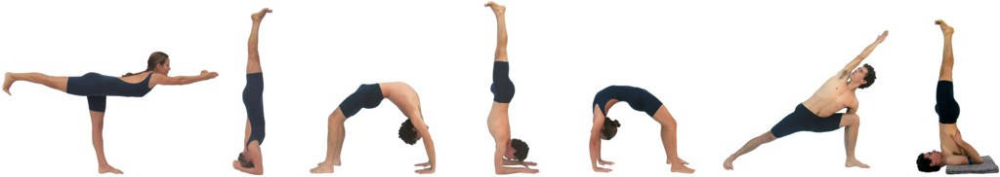

Quem Somos
O corpo é o meu templo, e os asanas são as minhas preces.

Pedro Pessoa
Professor
Estuda Iyengar Yoga há 18 anos e coordena o Centro de Iyengar Yoga Florianópolis. É certificado no nível Sênior Intermediário I, membro do Comitê Técnico da Associação Brasileira de Iyengar Yoga e um dos responsáveis pela Formação Autorizada em Iyengar Yoga no Brasil. Desde 2006 segue seu mestre Sricharan Faeq Biria, estudando na França. Desde 2011 viaja anualmente para o Ramamani Iyengar Yoga Memorial Institute em Pune, India, para estudar com a família Iyengar.

Camila de Lucca
Professora
Formada em Educação Física pela UFSC, estuda há 17 anos Iyengar Yoga, certificada no nível Sênior Intermediário I, membra do Comitê de Formação e Treinamento para Professores e uma das responsáveis pela Formação Autorizada em Iyengar Yoga no Brasil. Em 2002, junto de Pedro Pessoa, passou dois anos viajando pelo oriente para estudar com renomados mestres e professores de yoga. Atualmente segue os ensinamentos de Sricharan Faeq Biria, viajando regularmente para França. Desde 2011 viaja anualmente para o Ramamani Iyengar Yoga Memorial Institute em Pune, India.
